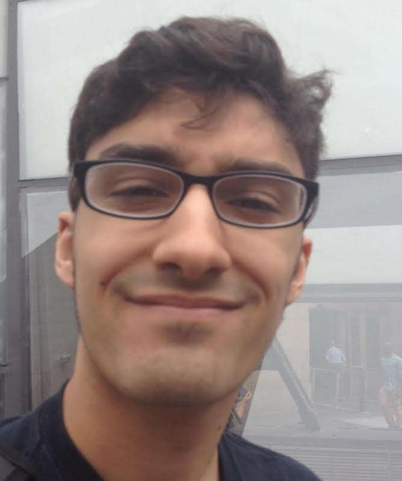

I am an experienced software engineer and computational scientist with interests in machine learning, computer vision, biology, and the development of new technologies for understanding human disease.
I currently work on computer vision, machine learning, and data engineering at Calico Labs. Previously, I've worked in the Computational Biology group at 10X Genomics, and in the Data Science & Data Engineering group at the Broad Institute. You can read about some of my projects here.
I grew up in Rhode Island and studied at MIT, double majoring in physics and ducks. In my spare time, I enjoy running, hiking, reading, and gaming.